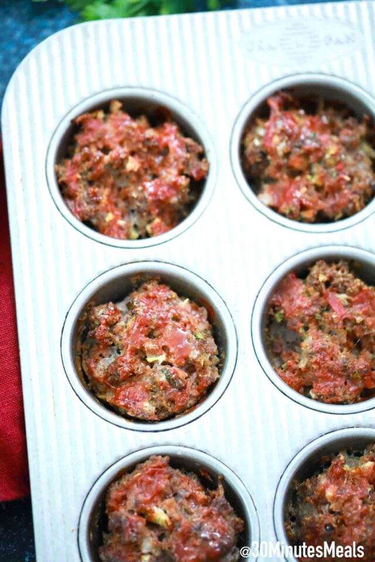

Meatloaf Muffins

Description
Meatloaf Muffins are easy to make, full of flavor, hearty, and juicy. They are perfect to serve as an appetizer or main dish. This recipe is so versatile that you can make it different every time you use it, adding or substituting ingredients as you desire. And you will have them on the table in less than 30 minutes.
ingredients
- 1 pound ground beef or ground turkey
- 1/3 cup seasoned breadcrumbs
- 1/3 cup parmesan cheese shredded
- 1 egg
- 8 ounces can tomato sauce
- 1/2 teaspoon garlic powder
- 1/2 teaspoon salt or to taste
- 1/4 teaspoon ground black
- 1 teaspoon Worcestershire sauce
Steps
- Preheat oven to 375 degrees F.
- In a medium bowl, combine all the ingredients, making sure to only use about ¼ of the tomato sauce. Reserve the rest.
- Press the meat into the muffin tins.
- Top with a bit of the remaining tomato sauce.
- Cook for 20-30 minutes, until cooked through.
- Serve warm.
Home